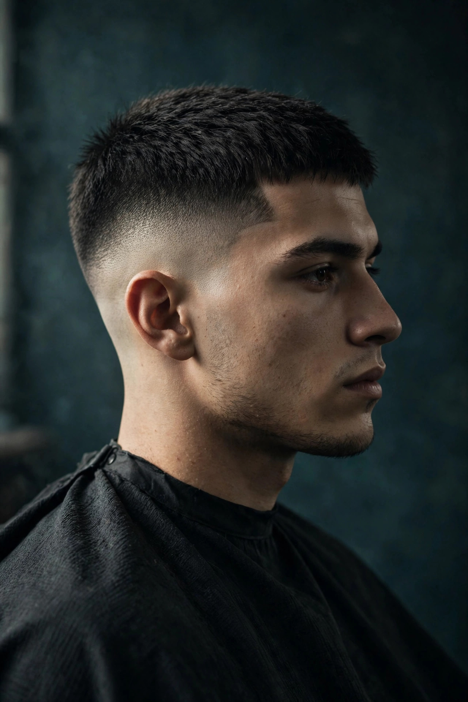
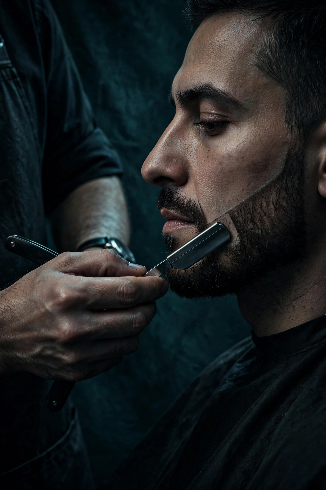
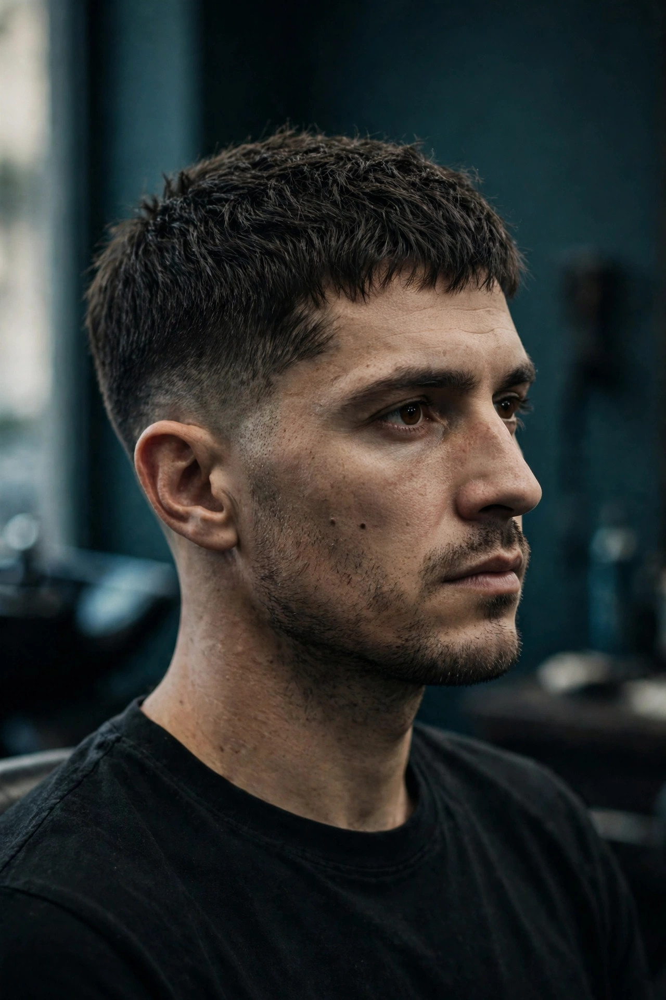

Eksempelbilde — AI-generert prøveSnitt // 01 · Tjeneste: Herreklipp
Skin fade & skarp nakkekant
Gradvis overgang fra bar hud til millimeterpresis lengde på toppen. Avsluttes med knivskarp nakkekant.
Bestill denne stilen →Arkiv & snittlinjer // Ravelsveita 4
Skandinavisk presisjon, skarpe konturer og tidløse herreklipper i Trondheim sentrum.
Selihom Frisør har ikke publisert et offisielt fotogalleri ennå. Bildene nedenfor er AI-genererte prøver som illustrerer stilene salongen tilbyr — de er ikke salongens eget arbeid.

Eksempelbilde — AI-generert prøveSnitt // 01 · Tjeneste: Herreklipp
Gradvis overgang fra bar hud til millimeterpresis lengde på toppen. Avsluttes med knivskarp nakkekant.
Bestill denne stilen →
Eksempelbilde — AI-generert prøveSnitt // 02 · Tjeneste: Skjegg Barbering
Definerte kinnlinjer, symmetrisk halskant og fjerning av uønsket volum. Utført med barberkniv og pleie.
Bestill denne stilen →
Eksempelbilde — AI-generert prøveSnitt // 03 · Tjeneste: Herreklipp
Nordisk vri på den moderne crop-klippen. Tett saksarbeid i kronen kombinert med ren taper ved nakke og sider.
Bestill denne stilen →Snitt // 04 · Tjeneste: Herreklipp og skjegg
Full pakke for en helhetlig oppgradering. Tidløs herreklipp med naturlig sideskille, matchet med formet skjegg.
Bestill denne stilen →Håndverk // Presisjonsverktøy
Uansett om du velger en rask herreklipp til 300 kr eller full pakke med skjegg til 350 kr, er målet det samme: skarpe linjer, ren finish og en klipp som holder seg.
4.98 ★
Kundetilfredshet · Setmore
90
Verifiserte vurderinger
6 dg
Mandag – lørdag
200–350 kr
Faste priser
Ravelsveita 4 · Trondheim
Sikre deg fast tid i stolen for å slippe ventetid, eller sving innom salongen i midtbyen. Vi holder åpent mandag–lørdag til kl. 20:00.